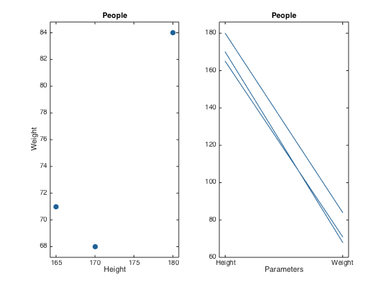
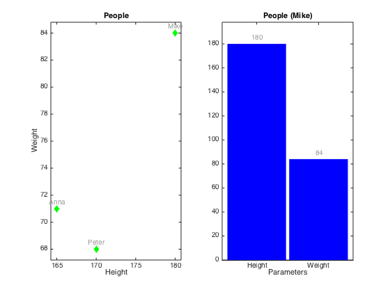
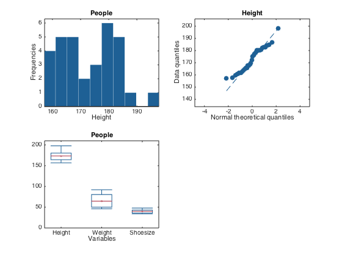

Quick start guide
This document gives a brief introduction to the basic functionality of mdatools toolbox as well as presents the core ideas about how it deals with data, models and results. It is assumed that after reading the text and doing all exercises from the document one can easily start working with toolbox and then learn more features eventually.
Introduction to datasets
One of the most important things in the MDA toolbox is a dataset object. MATLAB is a great to deal with matrices and arrays, however one has to do a lot of rutine operations to represent the matrix values properly. Usually we have names for variables and objects or labels for measurements in our data. However, dealing with the names and labels in MATLAB is not an easy job. One of the ways to solve this issue is to use dataset ? a specific object, which is a wrapper for an conventional numeric matrix, giving possibilties to use names more or less easily. Such objects exist in many toolboxes (including Statistics Toolbox) and the mdatools is not an exception here. Moreover, in mdatools dataset is a main way to represent any values. Scores, loadings, residuals, regression coefficients and so on are datasets in mdatools. Therefore is is important to start with introduction what dataset is, how to create and manipulate datasets.
Actually in mdatools datasets give a lot more options than just a possibility to have names for rows and columns of a matrix. They allow to hide rows and columns without removing them (for example when one need to remove an outlier or do variable selection), one can use qualitative data, factors, to group values and so on. But in this qick guide we will talk only about most important features of datasets, namely names/labels for rows and columns, making subsets, displaying data values, doing mathematical calculations and making plots.
Dataset can be created from any matrix (array with two dimensions: rows and columns). Actually it is not necessary to provide names for the dimensions. Column names will be generated automatically and row names will remain empty. Here is an example for 3x2 matrix with height and weight values for three persons:
values = [180 84; 170 68; 165 71]; d = mdadata(values); show(d)
Variables V1 V2 ---- --- 180 84 170 68 165 71
Function show() displays data values as a table. By default it uses three significant figures, this can be changed by providing extra argument, e.g. show(d, 5). To specify names for rows and objects one can provide them as a second and third arguments of the mdadata() method. The names can be either cell arrays with text values or numeric sequences (vectors). Numbers will be converted to text automatically.
values = [180 84; 170 68; 165 71];
d = mdadata(values, 1:3, {'Height', 'Weight'});
show(d)
Variables
Height Weight
------- -------
1 180 84
2 170 68
3 165 71
It is mandatory that row and column names are unique. It is recommended also not to use spaces and other special symbols, especially for column names, to avoid ambiguity. Actually the names may have two forms: full, with spaces and special symbols and short, with only letters and numbers. If one provides names with spaces and special symbols they will be converted to short form automatically. More on that can be found in the User Guide.
The mdadata is a MATLAB object which has several properties and many methods. You can see some of the properties by using disp().
disp(d)
3x2 mdadata array with properties:
name: ''
info: []
dimNames: {'Objects' 'Variables'}
values: [3x2 double]
nCols: 2
nRows: 3
nFactors: 0
rowNames: {'1' '2' '3'}
colNames: {'Height' 'Weight'}
rowFullNames: {'1' '2' '3'}
colFullNames: {'Height' 'Weight'}
The most important ones are values, which is a matrix with data values, rowNames - cell array with row names and colNames - cell array with column names. All three can be changed manually for the whole object or for particular rows or columns. You can also specify name of the datasetm short information text and labels for each of the two dimensions
d.rowNames = {'Lars', 'Peter', 'Anna'};
show(d)
d(1, :).rowNames = 'Mike';
show(d)
d.name = 'People';
d.info = 'People data for quick start guide';
d.dimNames = {'Persons', 'Parameters'};
show(d)
Variables
Height Weight
------- -------
Lars 180 84
Peter 170 68
Anna 165 71
Variables
Height Weight
------- -------
Mike 180 84
Peter 170 68
Anna 165 71
People:
People data for quick start guide
Parameters
Height Weight
------- -------
Mike 180 84
Peter 170 68
Anna 165 71
You can subset the dataset values using the same way as with matrices: by specifying indices for rows and columns. All special names and symbols, like : and end will work properly. Alternatively column and row names can be used for the same purpose.
show(d(1:2, :))
show(d({'Mike', 'Anna'}, 'Height'))
People:
Parameters
Height Weight
------- -------
Mike 180 84
Peter 170 68
People:
Height
-------
Mike 180
Anna 165
The mdadata class has most of the standard mathematical and statistical methods overrided. This means that you can work with datasets just as with conventinal matrices in MATLAB. Result of any operation is also a dataset (object of class mdadata). For example, let's calculate BMI index for our data values.
show(d) bmi = d(:, 'Weight') ./ (d(:, 'Height') / 100) .^ 2; bmi.colNames = 'BMI'; show(bmi)
People:
People data for quick start guide
Parameters
Height Weight
------- -------
Mike 180 84
Peter 170 68
Anna 165 71
BMI
-----
Mike 25.9
Peter 23.5
Anna 26.1
Simple plots
The mdadata also overrides several plotting methods, including scatter(), plot(), bar() and several others, including statistical plots, such as hist(), boxplot() and qqplot(). It means that if one provided an mdadata object as a first argument for these functions, a specially written version will be used instead of conventional MATLAB methods. Thus to make a scatter plot one have to provide a dataset with one or two columns. If more than two are available, scatter() method will ignore them.
figure subplot(1, 2, 1) scatter(d) subplot(1, 2, 2) plot(d)
As you can see the labels for axes as well as title for the plot were set automatically using dataset names. Color of data points, lines and bars are selected automatically but one can specify these and several other most important arguments for each plot. There are also additional options, allowing for example color groupping of data points and lines according to a vector of values, look at description of plotting methods for the mdadata class for details. One of the most useful option is a possibility to show labels for data points or bars. Labels can be names ('names'), numbers ('numbers') or values ('values' this can be used only with bar plot).
figure subplot(1, 2, 1) scatter(d, 'Marker', 'd', 'Color', 'g', 'Labels', 'names') subplot(1, 2, 2) bar(d('Mike', :), 'FaceColor', 'b', 'Labels', 'values')
Univariate statistics
There are several statistic methods available also for the mdadata datasets. To demonstrate this we will use a subset of dataset 'people', which is provided with the toolbox. In the dataset there are values for 32 persons from scandinavian and medditeranian regions (50% males, 50% females). Here are some examples.
load('people') d = people(:, {'Height', 'Weight', 'Shoesize'}); show( mean(d) ) show( std(d) ) show( se(d) ) show( percentile(d, 25) ) show( summary(d) )
Variables
Height Weight Shoesize
------- ------- ---------
Mean 173 64.5 39.9
Variables
Height Weight Shoesize
------- ------- ---------
Stdev 10.1 15.2 3.9
Variables
Height Weight Shoesize
------- ------- ---------
Std. error 1.78 2.69 0.689
Percentiles:
Variables
Height Weight Shoesize
------- ------- ---------
25% 164 50 36
Summary statistics:
Variables
Height Weight Shoesize
------- ------- ---------
Min 157 46 34
Q1 164 50 36
Median 174 64.5 40
Mean 173 64.5 39.9
Q3 180 80.5 43
Max 198 92 48
As well as several statistic plots.
figure subplot(2, 2, 1) hist( d(:, 'Height') ) subplot(2, 2, 2) qqplot( d(:, 'Height') ) subplot(2, 2, 3) boxplot( d )
We hope that this brief overview of mdadata gave an overall impression how it works and how to use it for storing and visualisation of data values. To learn more, please, look at the User Guide and full description of the mdadata class and its metods.